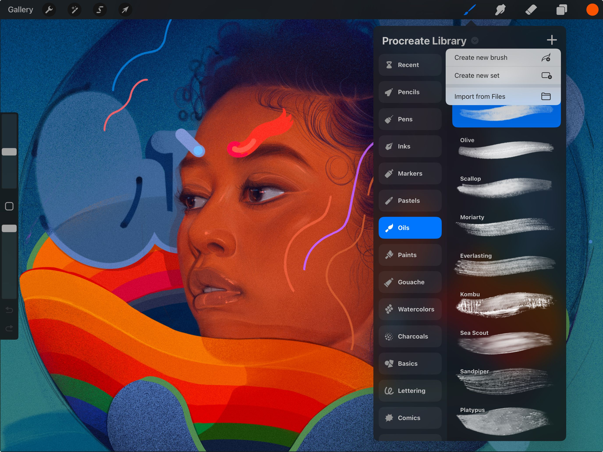
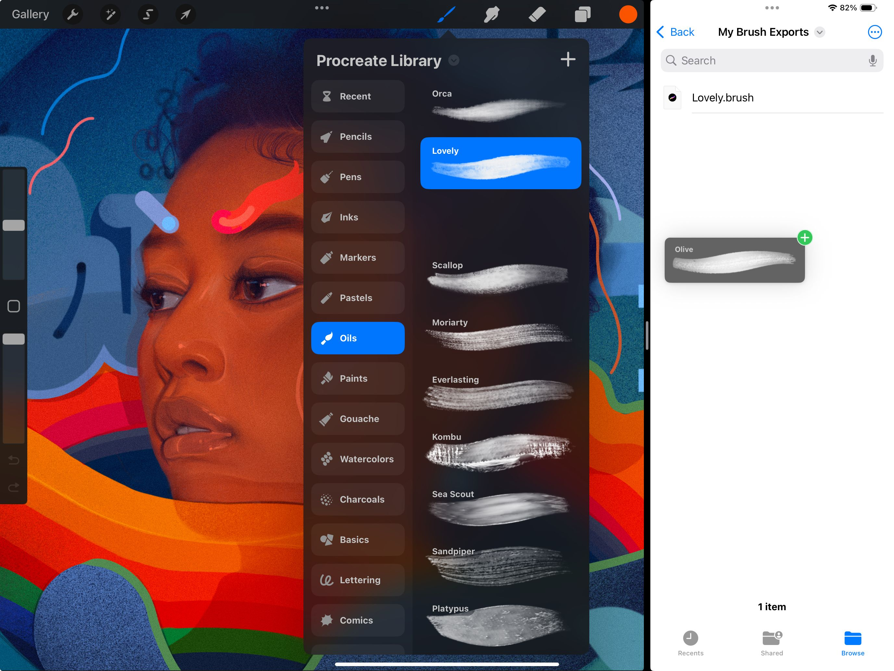

📖 Đã dịch sang tiếng Việt. Thuật ngữ chuyên môn giữ tiếng Anh — rê chuột để xem nghĩa (tooltip).
Import and Share
Việc nhập và xuất cọ cho phép bạn chia sẻ cũng như nhận các cọ độc đáo.
Nhập cọ, bộ cọ và thư viện cọ
Nhập cọ Procreate (.brush, .brushset và .brushlibrary) và Adobe® Photoshop® (.abr) vào Procreate.


Bạn có thể thêm cọ Procreate và cọ Adobe® Photoshop® vào thư viện cọ theo hai cách:
Nhập trong ứng dụng
Nhập cọ, bộ cọ và thư viện cọ thẳng vào Procreate.
Chạm nút [ ] ở góc trên bên phải của thư viện cọ, sau đó chạm Import from Files. Tìm đến tệp .brush, .brushset hoặc .brushlibrary mong muốn và chạm vào để nhập vào Procreate.
Nếu bạn nhập một cọ, nó sẽ xuất hiện trong một thư mục đặc biệt tên Imported ở đầu thư viện cọ hiện tại.
Nếu bạn nhập một bộ cọ, nó sẽ xuất hiện ở đầu thư viện cọ hiện tại.
Nếu bạn nhập một thư viện cọ, nó sẽ xuất hiện ở đầu danh sách thư viện cọ trong giao diện tổng quan.
Liên kết tệp (File Association)
Làm việc trực tiếp với tệp cọ.
Nếu bạn có tệp .brush, .brushset, .brushlibrary hoặc .abr trên mạng hoặc trong email, hãy chạm vào nó, bạn sẽ thấy lời nhắc nhập cọ vào Procreate.
Nếu bạn nhập một cọ, nó sẽ xuất hiện trong một thư mục đặc biệt tên Imported ở đầu thư viện cọ hiện tại.
Nếu bạn nhập một bộ cọ, nó sẽ xuất hiện ở đầu thư viện cọ hiện tại.
Nếu bạn nhập một thư viện cọ, nó sẽ xuất hiện ở đầu danh sách thư viện cọ trong giao diện tổng quan.
Kéo thả cọ
Chia sẻ hoặc nhập cọ ra/vào Procreate bằng thao tác kéo thả.

Xuất cọ
Nhấn và giữ một cọ để nhặt nó lên, sau đó kéo vào bất kỳ ứng dụng tương thích nào.
Để xuất nhiều cọ cùng lúc, nhấn và giữ một cọ để nhặt lên. Chạm các cọ khác bằng tay rảnh để thêm vào lựa chọn. Giờ hãy kéo thả tất cả cùng lúc.
Nhập cọ
Nhấn và giữ một tệp .brush, .brushset, .brushlibrary hoặc .abr để nhặt lên, sau đó kéo vào Procreate.
Nhấn và giữ một tệp .brush, .brushset, .brushlibrary hoặc .abr trong ứng dụng Files hoặc bất kỳ ứng dụng tương thích nào. Giờ hãy kéo thả tệp vào Procreate để nhập. Bạn có thể nhập nhiều cọ bằng cách nhặt một cọ lên rồi chạm thêm các cọ khác để kéo thả cùng nhau